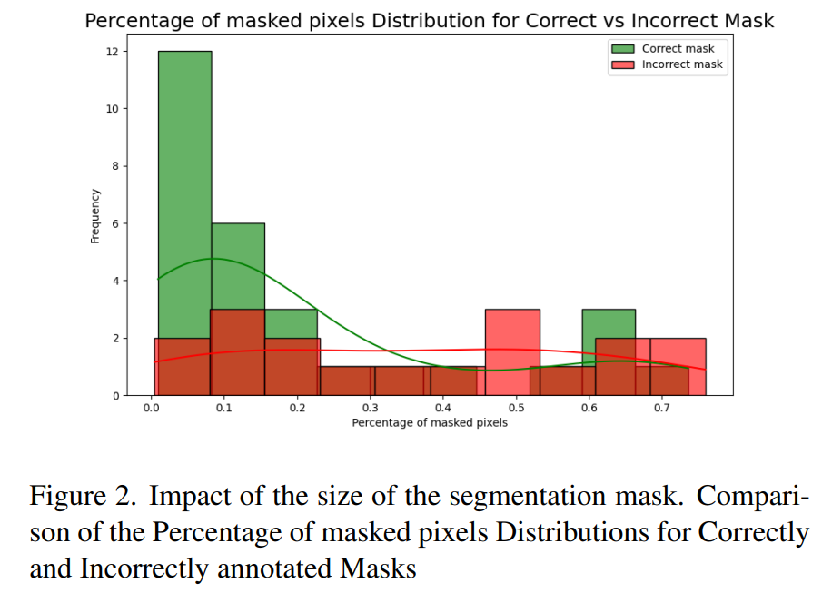
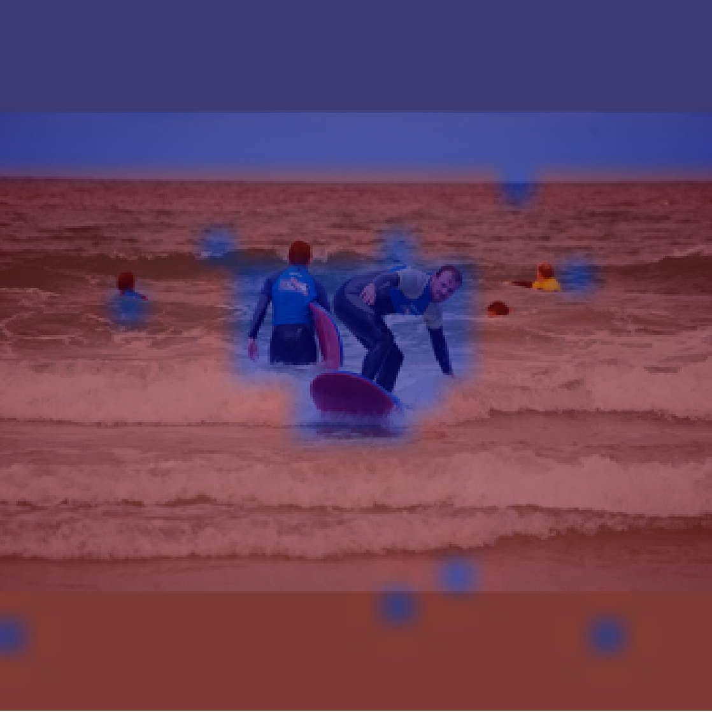
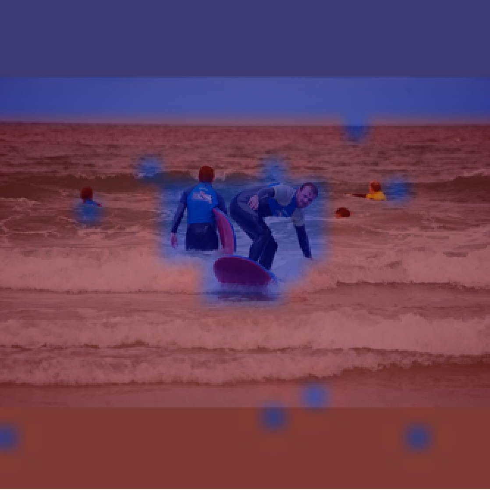
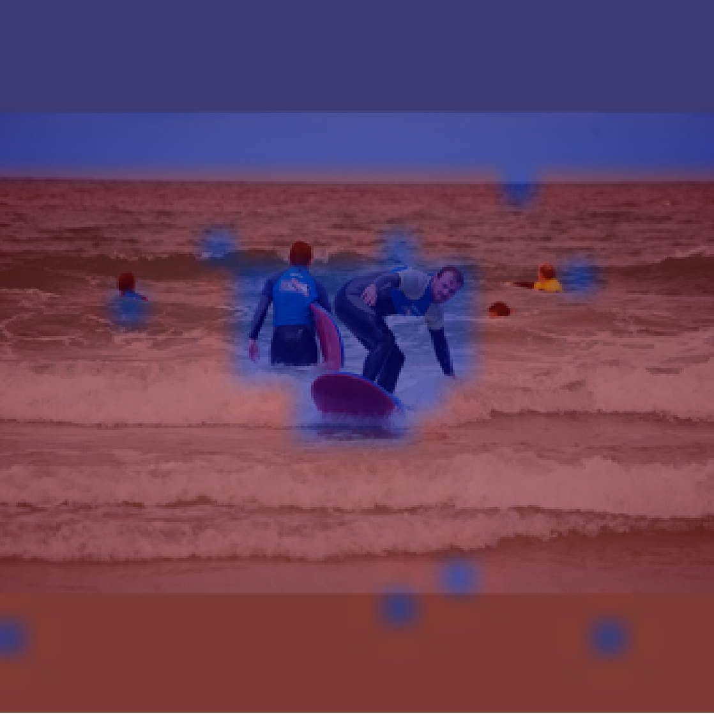

FiVL pipeline
How to augment datasets
FiVL Datasets
FiVL augments any training or evaluation dataset by identifying key expressions in the text—phrases that cannot be evoked without referencing the image—and generating corresponding segmentation masks for them. We applied our framework on 4 existing datasets: LLaVA-1.5-mix-665K, VQA-v2, GQA and POPE, and created FiVL-Instruct, FiVL-VQAv2, FiVL-GQA, and FiVL-POPE, respectively.
Q: How many kites can be seen flying in the air? A: There is one kite visible, flying high in the blue sky.
Q: What does the overall architecture of the building resemble? A: The overall architecture of the building resembles that of a castle, with two prominent towers connected by a section with the large clock.
Q: Is there any other item plaved near the chair and tennis racket? A: Yes, there is a framed painting propped up against the green chair next to the tennis racket.
Q: Is the fire hydrant on the sidewalk or on the road? A: The fire hydrant is situated on the curb, which is the edge between the sidewalk and the road, but it is more on the sidewalk side
Q: Is the bench located on the grass or a paved surface? A: The bench is located on the grass with a stone stab underneath it, in a park setting.
Q: What is the baseball player doing in the image? A: In the image, the baseball player is swinging a bat and hitting the ball during a baseball game.
Q: How is the cake presented? A: The cake is presented on a plate, and it appears to be homemade with white frosting covering the exterior.
Q: How are the wine glasses arranged on the table? A: The wine glasses are arranged in a series or lined up on the long brown wooden table in front of the window.
FiVL was evaluated using both manual and automated methods to assess the quality of the extracted key expressions and their corresponding segmentation masks. The results indicate that the highest scores were achieved for segmentation masks covering less than 20% of the image.

Training on FiVL-Instruct
We introduce a novel pretraining task, Vision Model Modeling. In this work, we propose not only to guide the
text logits but to also guide the visual outputs of the image patches provided by the segmentation masks
towards the key expression text tokens they represent.
Using this additional loss, we outperform the baseline model over different benchmarks
And as a side effect, our model inherently generates segmentation mask by associating each image patch with
the most likely text token prediction.
Image patches associated with the text token "bear".
Image patches associated with the text token "birds".
Image patches associated with the text token "bott".
Image patches associated with the text token "chair".
 Image patches associated with the text token "dog".
Image patches associated with the text token "people".
Image patches associated with the text token "train".

Image patches associated with the text token "water".
Image patches associated with the text token "dog".
Image patches associated with the text token "people".
Image patches associated with the text token "train".

Image patches associated with the text token "water".
We evaluated the quality of the generated segmentation masks using IoU metric against the Grounded-SAM
model, and compared it to the baseline model.
Image patches associated with the text token "bear".
Image patches associated with the text token "birds".
Image patches associated with the text token "bott".
Image patches associated with the text token "chair".
Image patches associated with the text token "dog".
Image patches associated with the text token "people".
Image patches associated with the text token "train".

Image patches associated with the text token "water".
Evaluation with FiVL-VQAv2, FiVL-GQA and FiVL-POPE
We introduce the Visual Reliance Score, a metric that quantifies how much a model relies on images to
support its answers within a given benchmark. At the model level, it highlights which models effectively
utilize images to answer questions across benchmarks. At the benchmark level, it reveals which benchmarks
pose greater challenges in terms of visual reliance.
Explainability
We further leveraged our FiVL dataset to develop a metric that identifies attention heads most effective at
aligning vision and text.
Attention Head (10,6) of the token ”girl”. Q - Who are the two people playing Frisbee in the image?
A - The two people playing Frisbee in the image are a man and a little girl.
 Attention Head (10,6) of the token three. Q - A - There are three people in the image
Attention Head (14,11) of the token ”girl”. Q - Who are the two people playing Frisbee in the image?
A - The two people playing Frisbee in the image are a man and a little girl.
Attention Head (14, 11) of the token three. Q - A - There are three people in the image.
Attention Head (10,6) of the token three. Q - A - There are three people in the image
Attention Head (14,11) of the token ”girl”. Q - Who are the two people playing Frisbee in the image?
A - The two people playing Frisbee in the image are a man and a little girl.
Attention Head (14, 11) of the token three. Q - A - There are three people in the image.
Attention Head (10,6) of the token ”girl”. Q - Who are the two people playing Frisbee in the image?
A - The two people playing Frisbee in the image are a man and a little girl.
Attention Head (10,6) of the token three. Q - A - There are three people in the image
Attention Head (14,11) of the token ”girl”. Q - Who are the two people playing Frisbee in the image?
A - The two people playing Frisbee in the image are a man and a little girl.
Attention Head (14, 11) of the token three. Q - A - There are three people in the image.
Paper
BibTeX
@misc{
}